|
3-4-2-1
|
Czechia | 0 | - | 3 | Mexico |
4-3-3
|
| HT 0-0 | ||||||
|
FIFA World CupThursday 25 June 2026
|
||||||
- Venue
- Mexico City Stadium
- Attendance
- 80,824
- Referee
- Yael Falcón Pérez
Substitution56'
D. Višinský
L. Provod
- 2
Substitution64'
A. Hložek
P. Schick
T. Holeš
T. Souček
- 2
Substitution87'
L. Červ
T. Chorý
T. Souček
A. Sojka
Whistle45+4'
45+4'
Goal55'
M. Chávez
Assist: L. Romo
Goal61'
J. Quiñones
Assist: J. Sánchez
- 2
Substitution63'
G. Martínez
S. Giménez
L. Romo
O. Vargas
Yellow card64'
E. Álvarez
Substitution72'
G. Mora
Á. Fidalgo
- 2
Substitution78'
R. Rangel
G. Ochoa
M. Chávez
J. Gallardo
Goal90+4'
Á. Fidalgo
Assist: R. Alvarado
Czechia | |
|---|---|
Goalkeeper | |
| 1 | M. Kovář |
Defender | |
| 3 | T. Holeš 64' |
| 4 | R. Hranáč |
| 7 | L. Krejčí |
Midfielder | |
| 5 | V. Coufal |
| 12 | L. Červ 87' |
| 15 | P. Šulc |
| 18 | M. Sadílek |
| 21 | D. Douděra |
| 26 | D. Višinský 56' |
Forward | |
| 9 | A. Hložek 64' |
Substitutes | |
| 10 | P. Schick 64' |
| 17 | L. Provod 56' |
| 19 | T. Chorý 87' |
| 22 | T. Souček 64'87' |
| 24 | A. Sojka 87' |
Mexico | |
Goalkeeper | |
| 1 | R. Rangel 78' |
Defender | |
| 2 | J. Sánchez |
| 3 | C. Montes |
| 15 | I. Reyes |
| 20 | M. Chávez 55'78' |
Midfielder | |
| 4 | E. Álvarez 64' |
| 7 | L. Romo 63' |
| 19 | G. Mora 72' |
Forward | |
| 16 | J. Quiñones 61' |
| 22 | G. Martínez 63' |
| 25 | R. Alvarado |
Substitutes | |
| 8 | Á. Fidalgo 72'90+4' |
| 11 | S. Giménez 63' |
| 13 | G. Ochoa 78' |
| 18 | O. Vargas 63' |
| 23 | J. Gallardo 78' |


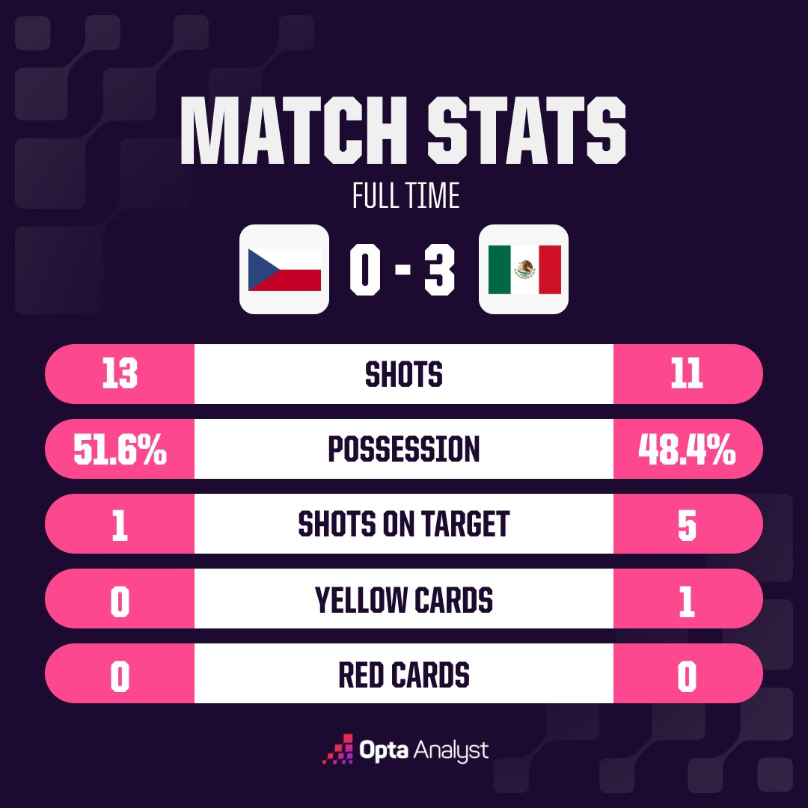
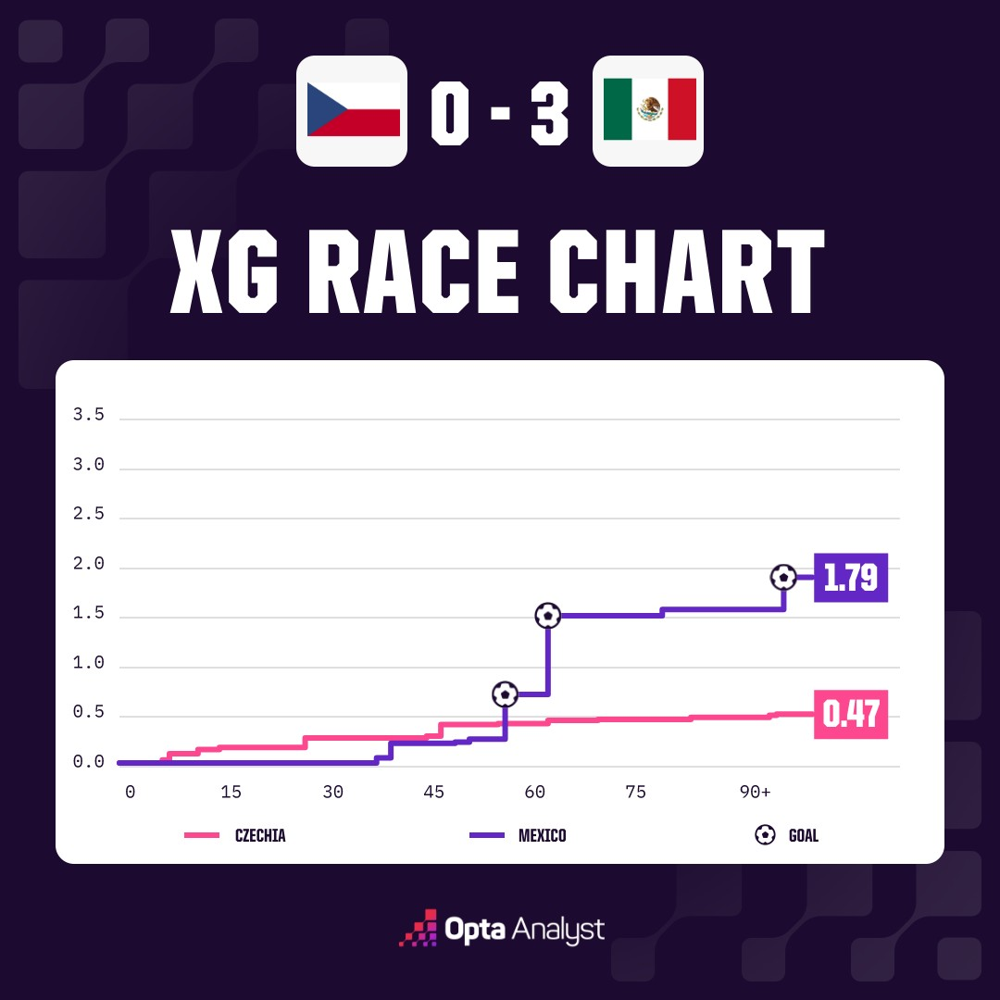
98'
Mexico have won their last 4 games in the FIFA World Cup, their longest winning streak in the competition (since at least 1965/1966).
98'
Czechia have failed to win in their last 5 games in the FIFA World Cup, their longest winless streak in the competition (since at least 1965/1966).
98'
Mexico have kept a clean sheet in each of their last 3 games in the FIFA World Cup, a run of 315 minutes without conceding a goal.
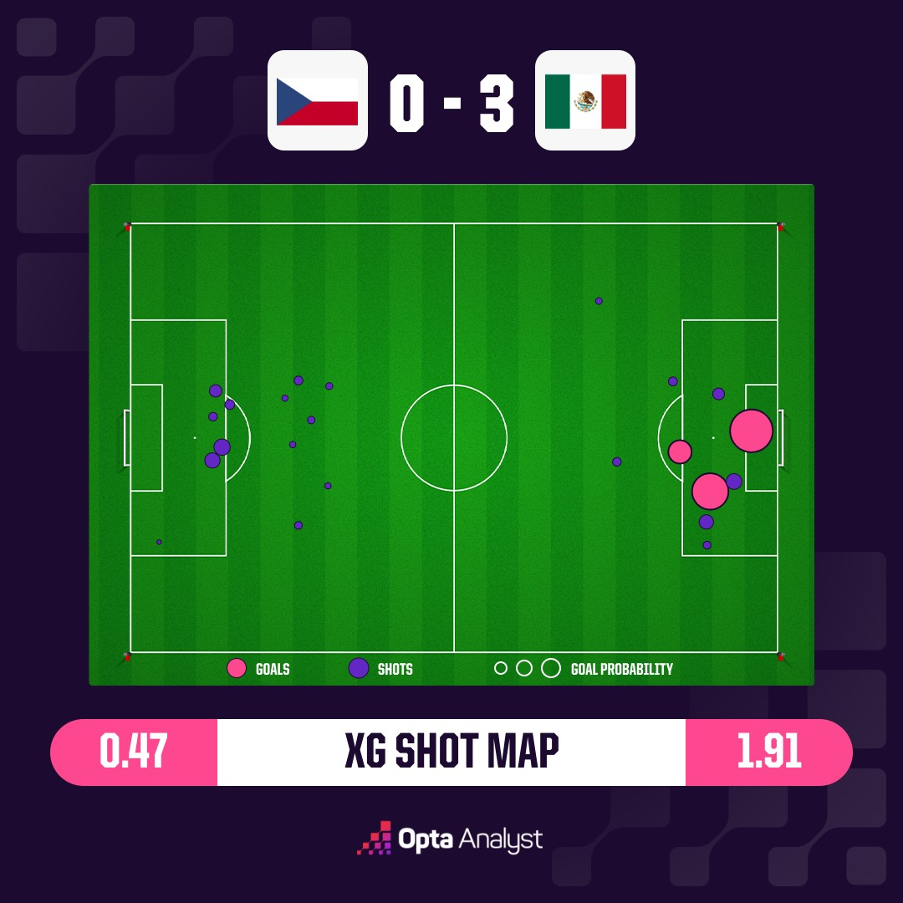
90+7'
That's it! The referee blows the whistle and we have reached full-time. The final score at Mexico City Stadium is Czechia 0-3 Mexico.
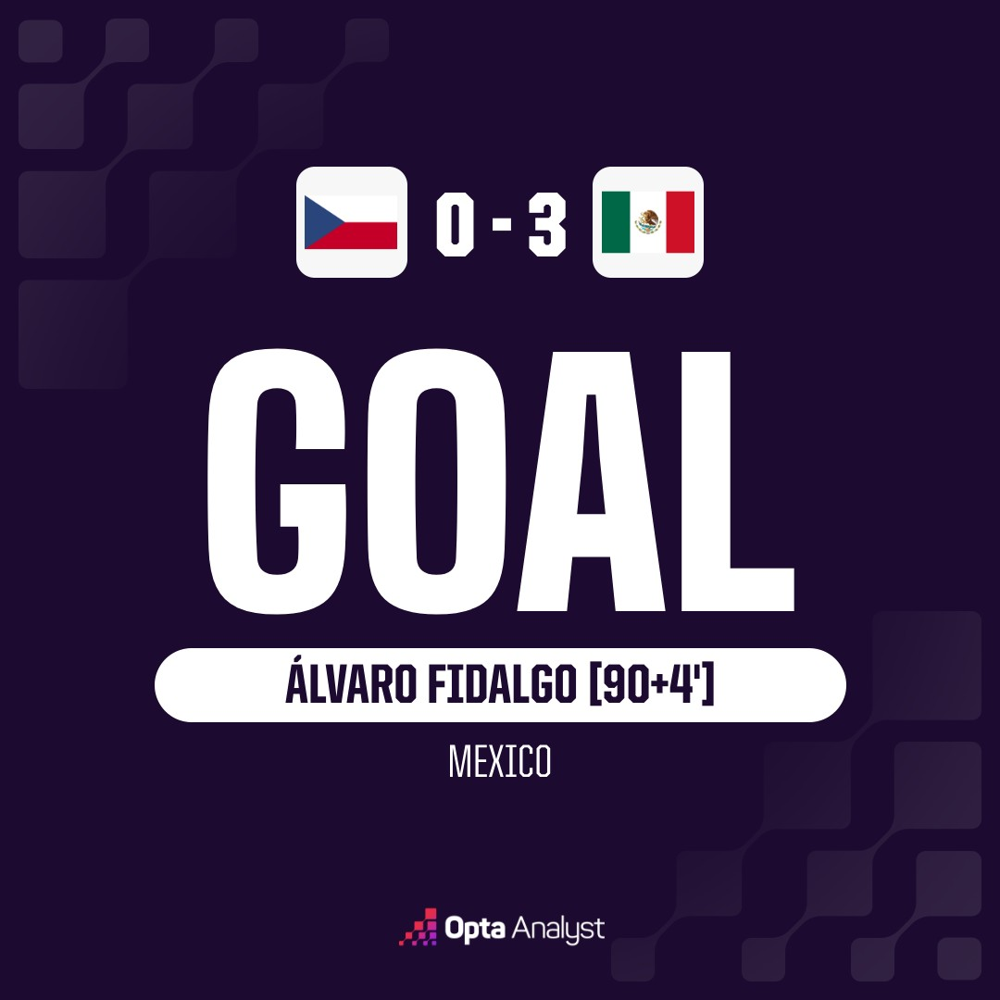
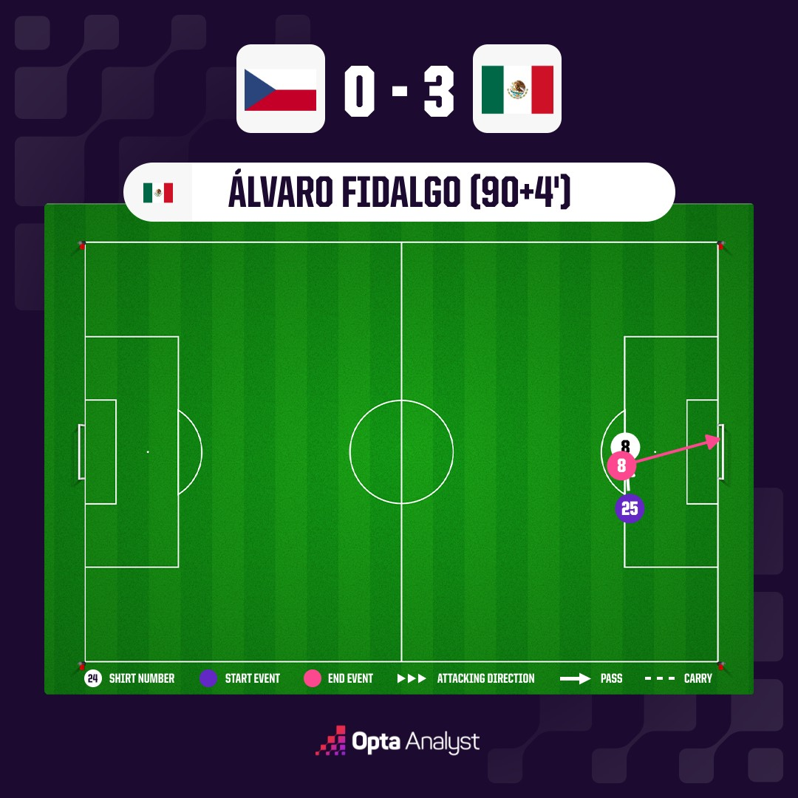
90+4'
Roberto Alvarado has assisted his second goal in the 2026 FIFA World Cup.
90+4'
Mexico have scored 3 goals in the FIFA World Cup game for the first time since 23rd June 2014 against Croatia (W3-1).
90+4'
Álvaro Fidalgo has scored his first goal in the 2026 FIFA World Cup.
90+4'
Álvaro Fidalgo! That is another goal for Mexico, who now lead 3-0! Is there any way back into this one for Czechia? Their prospects look bleak, unless they can find a swift response.
90+4'
What a miss! That is a bad finish from Santiago Giménez, who has been unable to convert from a good opportunity, seeing a big chance for Mexico to extend their lead go begging. Will Czechia make them pay for that profligacy?
90+3'
MISS! A shot from David Douděra ends up being off target. They might have done a bit better with that one, but it remains Czechia 0-2 Mexico.
90+2'
Obed Vargas goes in on Michal Sadílek and concedes a foul. The free-kick is not in a particularly dangerous area from Mexico’s viewpoint, though.
90+2'
It's all hands on deck for Mexico as they defend their lead, making a wave of critical blocks and clearances
90+2'
No luck! Pavel Šulc takes on a shot that, had they got it right, might have been set to test the goalkeeper, but instead it is sent off target and Mexico come away unscathed.
90+1'
Not much goalmouth action to speak of in this period of the game, with no attempts made from either side. This game could spark at any moment, however. It is Mexico who have had more of the ball, controlling 66 per cent possession in the last 10 minutes.
90+1'
Masterclass in game management from Mexico. They're making Czechia chase ghosts with these patient passing moves, content to keep the ball until the final whistle.
87'
That is bad news for Czechia, as they suffer an injury blow, with Tomás Souček having had to receive treatment before then making their way off the pitch. Alexandr Sojka is coming on.
87'
Substitution! Tomás Chorý replaces Lukás Červ for Czechia as the manager shuffles the pack. Can Tomás Chorý make an impression as this match continues?
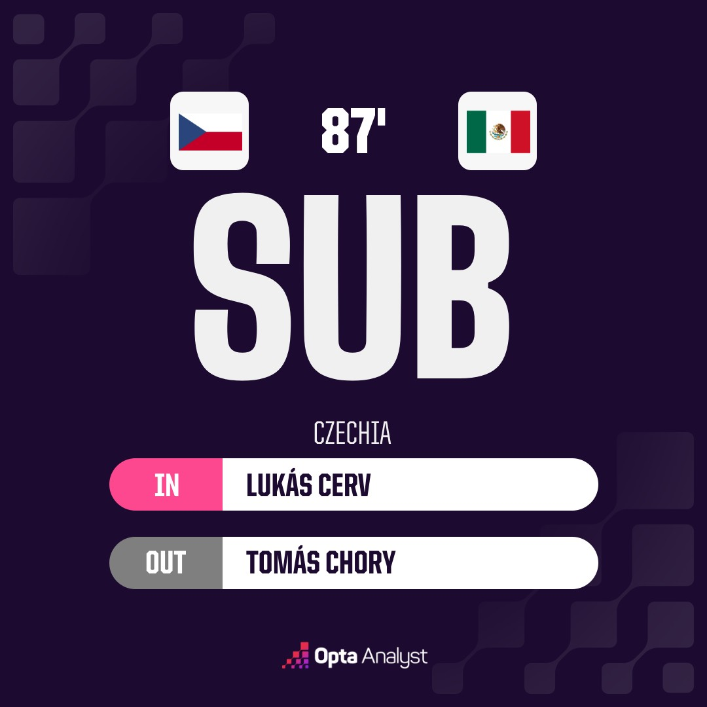
82'
Good play from Vladimír Coufal, who draws a foul from Jorge Sánchez to hand Czechia a free-kick in a dangerous position. Will they create something from this set-piece?
81'
A rash challenge from Patrik Schick, who sends Edson Álvarez tumbling, giving Mexico a free-kick. It is not in a threatening position, but it gives them a chance to get back on the ball.
81'
No luck! David Douděra takes on a shot that, had they got it right, might have been set to test the goalkeeper, but instead it is sent off target and Mexico come away unscathed.
80'
Still behind, but Czechia are refusing to roll over - defensive urgency rising as they fend off more pressure and push for a late turnaround.
78'
Mateo Chávez’s match is over as Mexico decide to make a substitution. Jesús Gallardo enters the field in what looks like a tactical change.
78'
Raúl Rangel’s match is over as Mexico decide to make a substitution. Guillermo Ochoa enters the field in what looks like a tactical change.
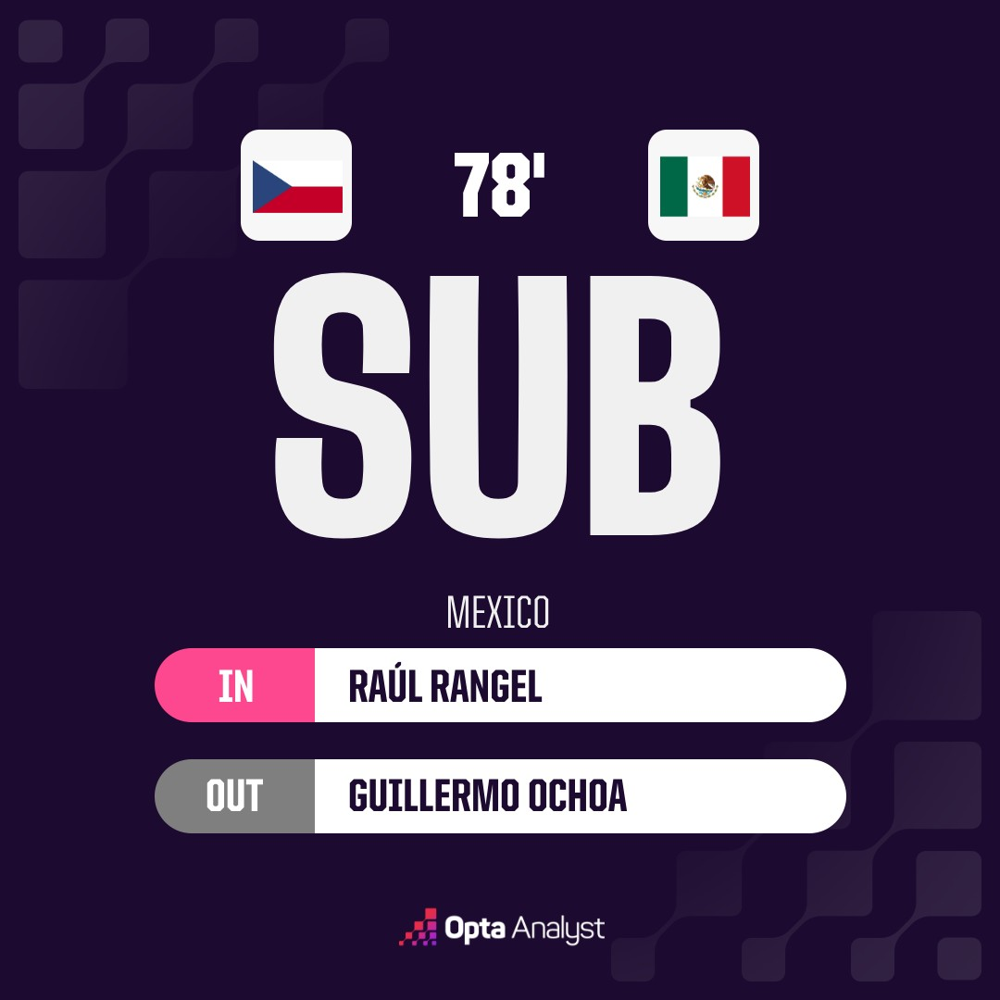
77'
An opportunity for Mexico to extend their lead goes begging, as Julián Quiñones is unable to convert from a good opening. Will they live to regret that miss?
77'
In the last 15 minutes, it is Czechia who have dominated the ball, having seen 84.93% of the possession, yet they have not been able to go and turn that into a goal just yet, with their opponents standing firm.
76'
A rash challenge from Tomás Souček, who sends Jorge Sánchez tumbling, giving Mexico a free-kick. It is not in a threatening position, but it gives them a chance to get back on the ball.
76'
It's all hands on deck for Mexico as they defend their lead, making a wave of critical blocks and clearances
74'
A foul from Robin Hranáč on Santiago Giménez sees Mexico win a free-kick, but it is not in a dangerous position, so Czechia should be confident they can defend it easily enough.
72'
Substitution! Álvaro Fidalgo replaces Gilberto Mora for Mexico as the manager shuffles the pack. Can Álvaro Fidalgo make an impression as this match continues?
68'
MISS! A shot from David Douděra ends up being off target. They might have done a bit better with that one, but it remains Czechia 0-2 Mexico.
67'
Set-piece after set-piece - Czechia are turning up the pressure as they search for a breakthrough.
67'
It’s backs to the wall now — Mexico throwing everything into defending their advantage, with a flurry of crucial interventions.
66'
With 25 minutes left to play, it’s a good chance to check in on the shot count. Czechia have mustered 9 so far, with 1 of those landing on target. On the other hand, Mexico have gotten 8 of their 3 of attempts on target.
64'
Substitution! Tomás Souček replaces Tomás Holeš for Czechia as the manager shuffles the pack. Can Tomás Souček make an impression as this match continues?
64'
Adam Hložek’s match is over as Czechia decide to make a substitution. Patrik Schick enters the field in what looks like a tactical change.
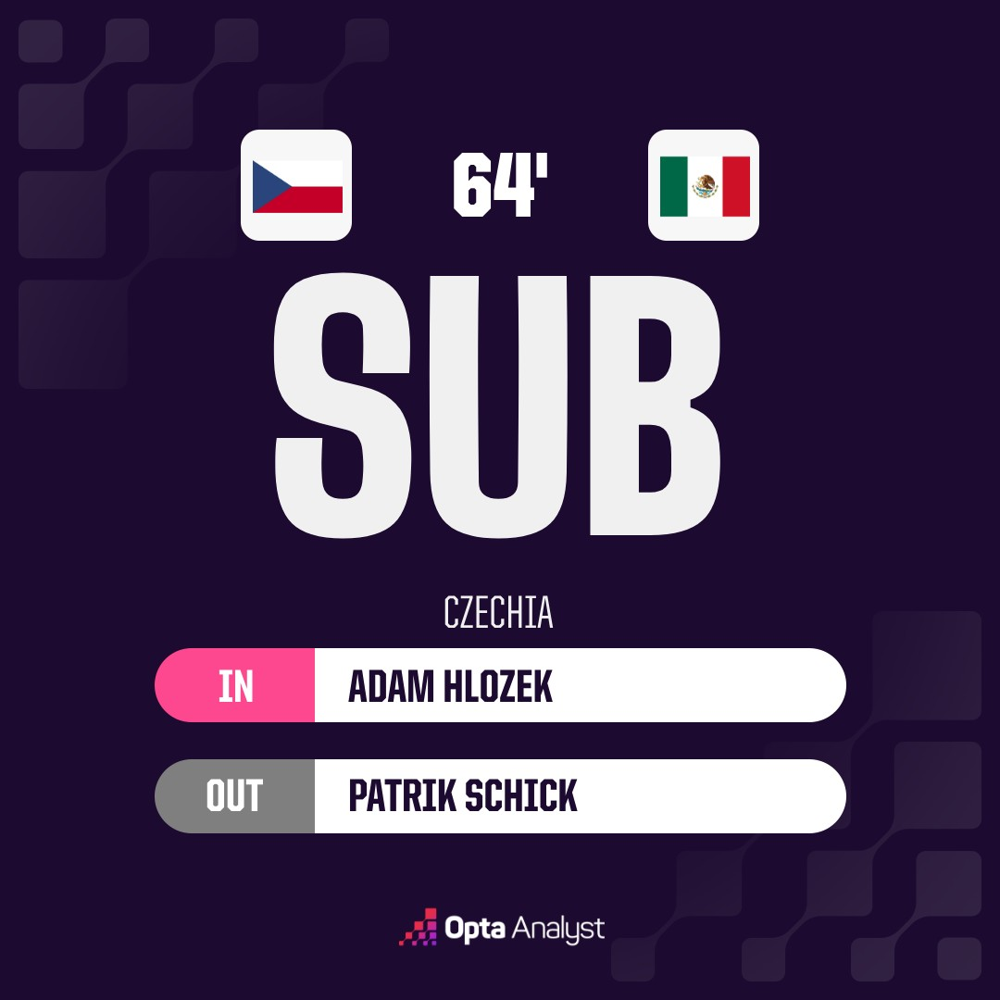
64'
A yellow card for Mexico's Edson Álvarez. They will have to walk a tightrope for the rest of this match, and Czechia will likely look to target them and draw a second bookable offence.
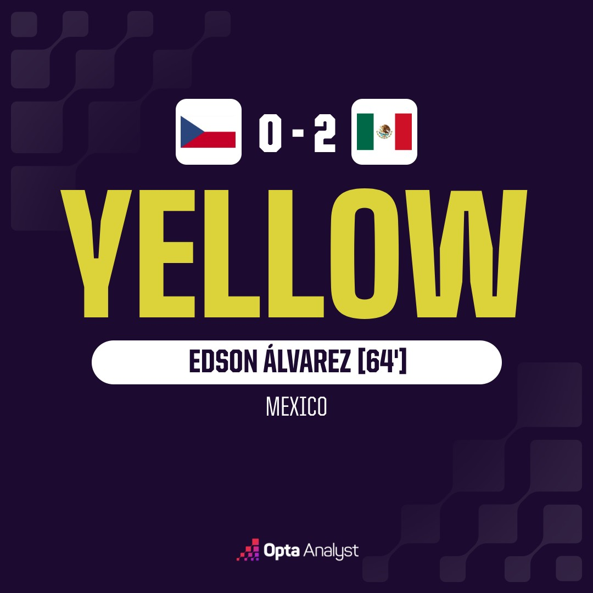
64'
Edson Álvarez goes in on Adam Hložek and concedes a foul. The free-kick is not in a particularly dangerous area from Mexico’s viewpoint, though.
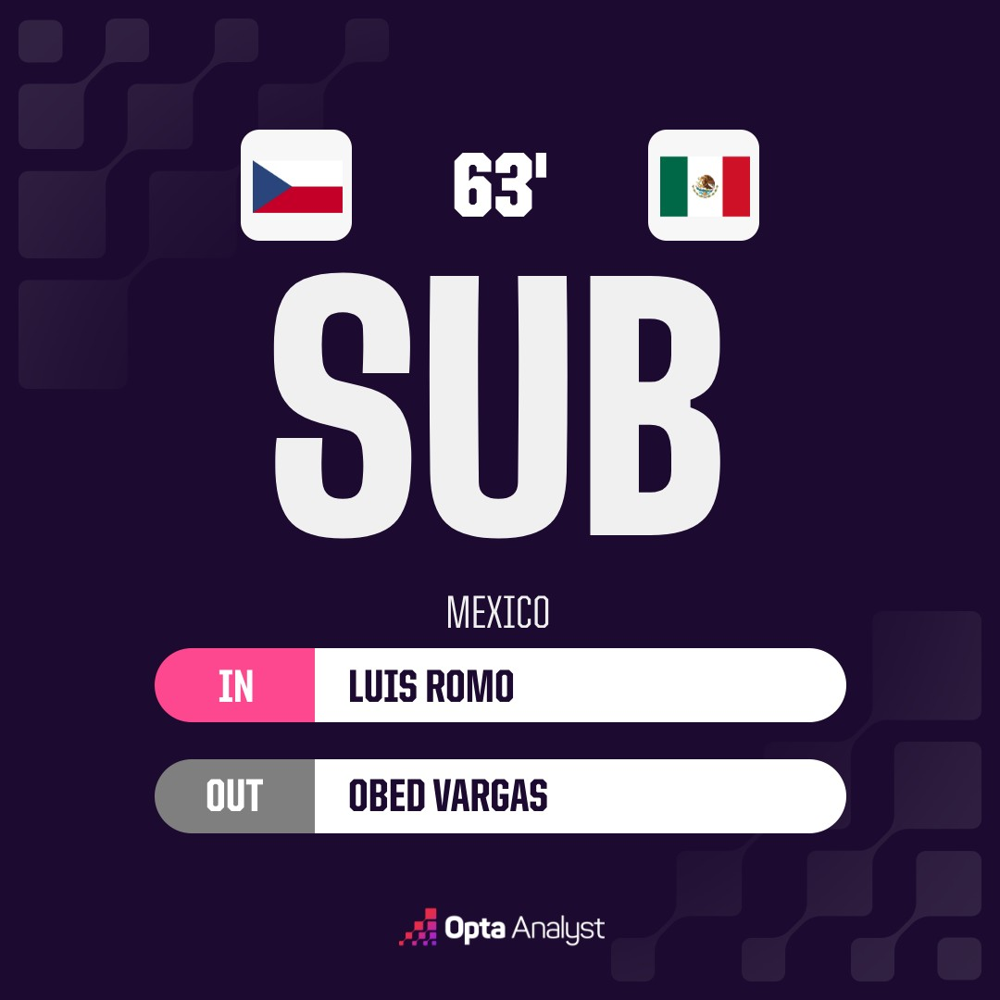
63'
Mexico are making a tactical change. Luis Romo is leaving the field and in their place comes Obed Vargas – we will soon see if this switch has the desired impact.
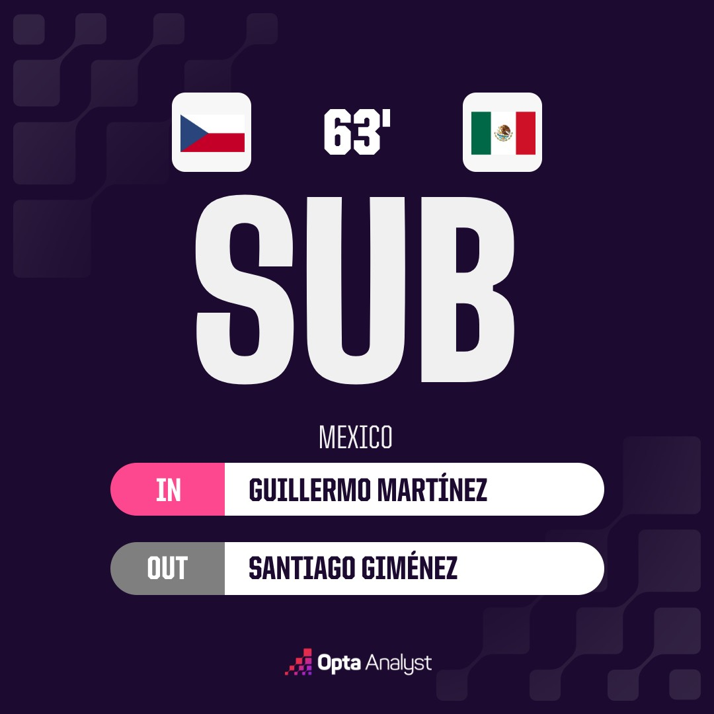
63'
Substitution! Santiago Giménez replaces Guillermo Martínez for Mexico as the manager shuffles the pack. Can Santiago Giménez make an impression as this match continues?
61'
Jorge Sánchez has assisted his first goal in the 2026 FIFA World Cup.
61'
Is that game over? Mexico are now well ahead, having extended their lead to 2 goals thanks to Julián Quiñones’s effort. It’s now 2-0, and Czechia face an uphill battle to get back into it.
61'
Julián Quiñones has scored his second goal in the 2026 FIFA World Cup, netting for the first time since 11th June 2026 against South Africa.
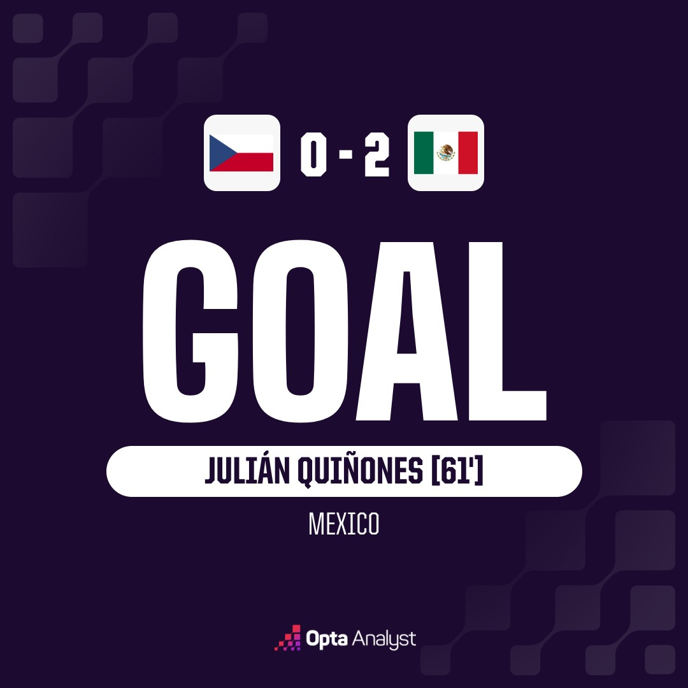
61'
BLOCK! An intervention from Edson Álvarez might have just prevented a goal, with the defending player getting in the way of an attempt from Michal Sadílek. Solid defending there!
58'
Great defending from Mexico, who are staying organised and winning key battles to preserve their lead.
58'
Free-kick! A foul from Julián Quiñones on Tomás Holeš. It is well away from Mexico’s goal, so it is unlikely to result in a chance for Czechia.
57'
Lukás Provod goes in on Gilberto Mora and concedes a foul. The free-kick is not in a particularly dangerous area from Czechia’s viewpoint, though.
56'
Czechia are making a tactical change. Denis Višinský is leaving the field and in their place comes Lukás Provod – we will soon see if this switch has the desired impact.
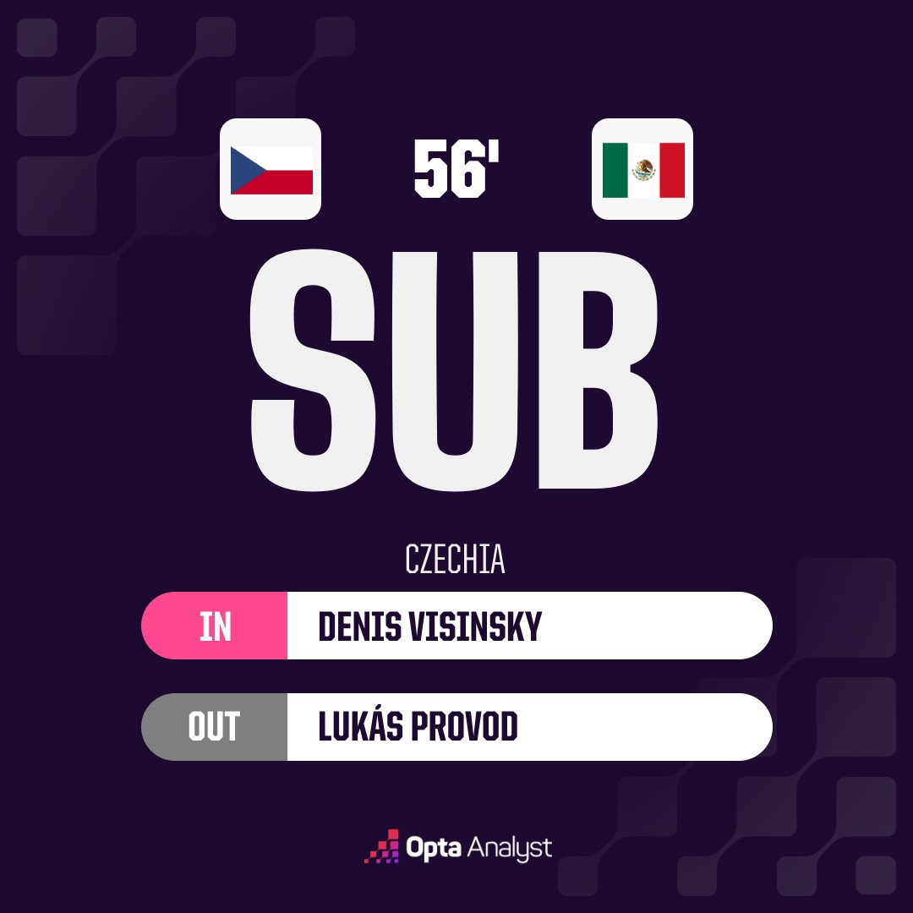
55'
Luis Romo has assisted his first goal in the 2026 FIFA World Cup.
55'
Mexico have avoided defeat in their last 5 matches when scoring first in the FIFA World Cup, since a 1-2 loss to Netherlands on 29th June 2014.
55'
Mateo Chávez has scored his first goal in the 2026 FIFA World Cup.
55'
GOAL! The drama continues as Mexico take the lead, courtesy of a goal from Mateo Chávez. There is still plenty of time remaining for more potential twists and turns, but as things stand Mexico are on track for victory.
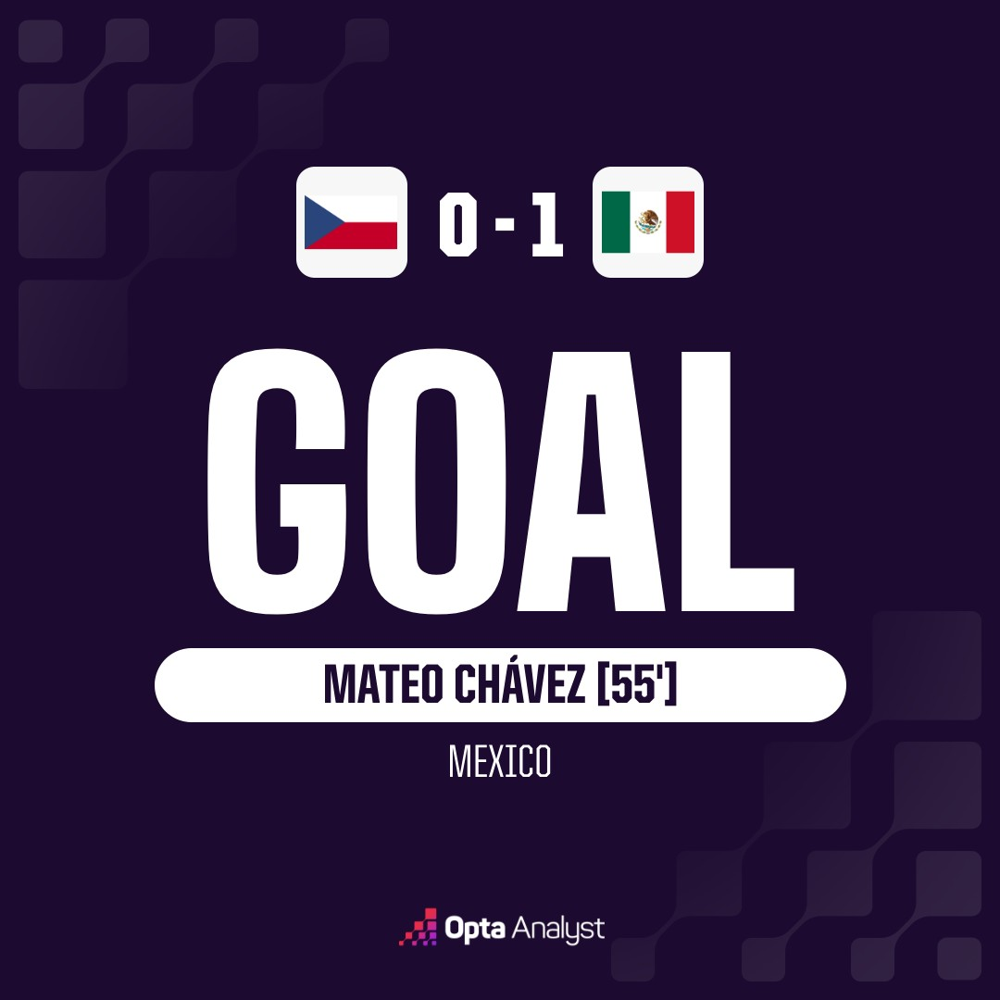
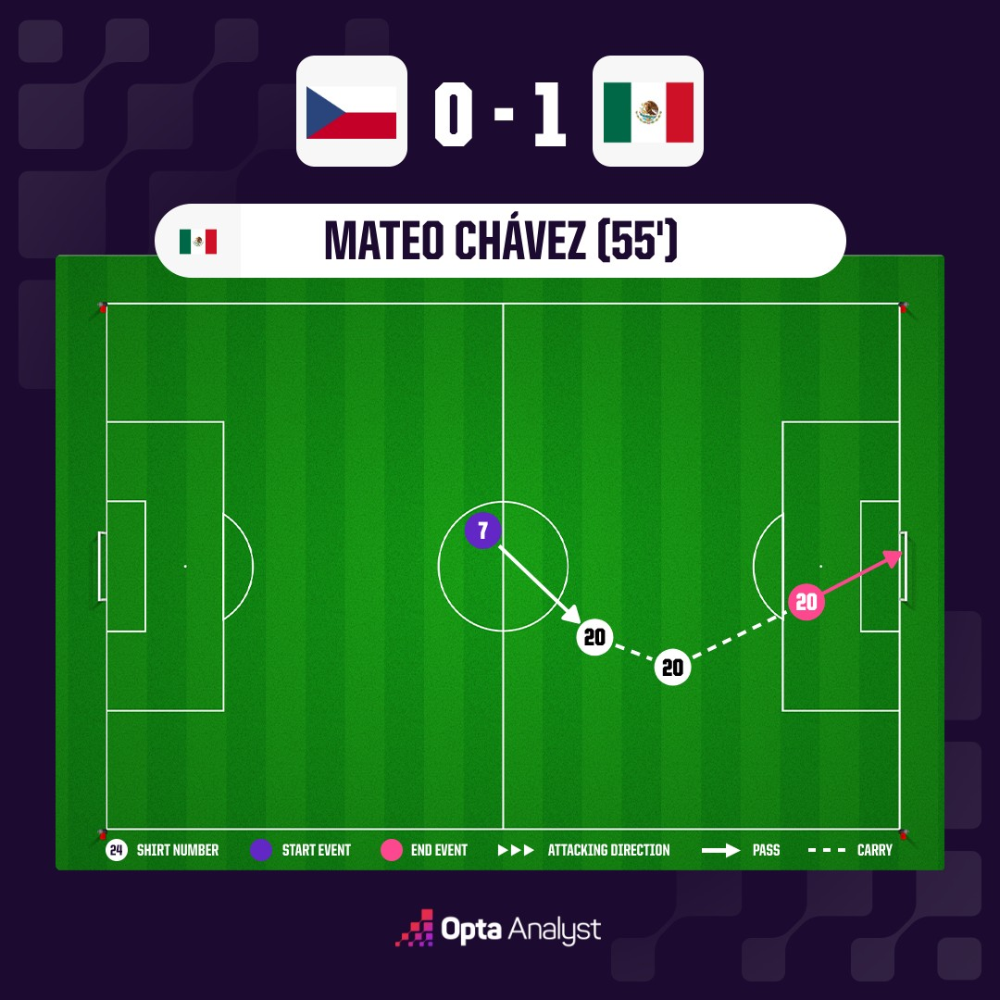
54'
This feels like a spell that could matter - Czechia earning repeated chances to swing it in from wide areas.
53'
Edson Álvarez goes in on David Douděra and concedes a foul. The free-kick is not in a particularly dangerous area from Mexico’s viewpoint, though.
52'
A free-kick to Czechia, as Edson Álvarez goes in and fouls Adam Hložek. However, Mexico will not mind giving one away in this area too much, with plenty of distance to their goal.
51'
The Mexico defence steps up in time and there is a frustration for Pavel Šulc, who thought they were through until the flag goes up to signal offside.
50'
Great block from Tomás Holeš, as they get in the way of an attempt from Julián Quiñones that might have been set to cause the goalkeeper some problems. Solid defending from the Czechia player.
46'
SAVED! Good work from Raúl Rangel, who stands firm to deny Lukás Červ, who managed to get a shot away from inside the Mexico area.
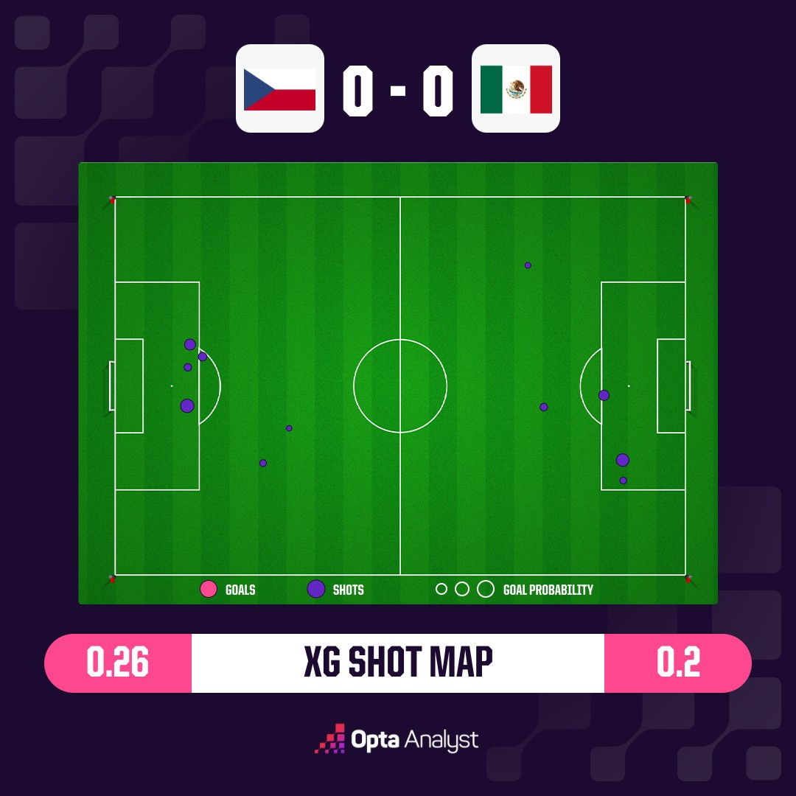
45+5'
Half-time! The referee blows the whistle and it is time for the interval. As we reach the break it is Czechia 0-0 Mexico at Mexico City Stadium.
45+3'
Free-kick! A foul from Tomás Holeš on Julián Quiñones. It is well away from Czechia’s goal, so it is unlikely to result in a chance for Mexico.
45+3'
No luck! Julián Quiñones takes on a shot that, had they got it right, might have been set to test the goalkeeper, but instead it is sent off target and Czechia come away unscathed.
45+2'
Mexico are having plenty of the ball, with 65.75% possession in the last 15 minutes. However, they have been unable to transfer that possessional dominance into a goal during that period.
44'
MISS! A shot from David Douděra ends up being off target. They might have done a bit better with that one, but it remains Czechia 0-0 Mexico.
43'
Can Czechia make this chance count? They have won a free-kick in a threatening position after a foul from Guillermo Martínez on Tomás Holeš. Will Mexico's defence be tested here?
42'
César Montes goes in on Adam Hložek and concedes a foul. The free-kick is not in a particularly dangerous area from Mexico’s viewpoint, though.
41'
Czechia have not had a shot on target so far in this game.
39'
A chance goes begging as Roberto Alvarado gets off a shot that does not hit the target. They might have done better with that one, but instead it is a goal-kick to Czechia.
39'
CLOSE! Jorge Sánchez gets into a decent shooting position inside the Czechia area, and manages to find space to get an effort off. However, Matej Kovář is equal to it.
39'
BLOCKED! That was close. Gilberto Mora got off a shot, which was heading in, but David Douděra was on hand to make a vital intervention. Great block!
37'
A chance goes begging as Israel Reyes gets off a shot that does not hit the target. They might have done better with that one, but instead it is a goal-kick to Czechia.
37'
Not much goalmouth action to speak of in this period of the game, with no attempts made from either side. This game could spark at any moment, however. It is Mexico who have had more of the ball, controlling 59 per cent possession in the last 10 minutes.
36'
A free-kick in a dangerous position now for Mexico, after a foul from Lukás Červ on Luis Romo. Can Mexico make Czechia pay for that rashness from Lukás Červ?
27'
BLOCK! An intervention from Luis Romo might have just prevented a goal, with the defending player getting in the way of an attempt from Denis Višinský. Solid defending there!
26'
A foul from Guillermo Martínez on Lukás Červ sees Czechia win a free-kick, but it is not in a dangerous position, so Mexico should be confident they can defend it easily enough.
26'
This game is certainly in a bit of a lull now, with neither team having had an attempt at goal in the past 10 minutes. It could do with something to spark it into life. Czechia have had more possession during the quiet spell, but are yet to do much with it.
21'
A free-kick in a dangerous position now for Mexico, after a foul from Robin Hranáč on Guillermo Martínez. Can Mexico make Czechia pay for that rashness from Robin Hranáč?
21'
In the last 15 minutes, it is Czechia who have dominated the ball, having seen 65.03% of the possession, yet they have not been able to go and turn that into a goal just yet, with their opponents standing firm.
17'
A free-kick to Mexico, as Adam Hložek goes in and fouls César Montes. However, Czechia will not mind giving one away in this area too much, with plenty of distance to their goal.
15'
MISS! The score remains 0-0, with Mexico relieved after Czechia’s Denis Višinský goes for goal but sends their attempt off target. Not one to write home about, that one.
12'
A chance goes begging as Michal Sadílek gets off a shot that does not hit the target. They might have done better with that one, but instead it is a goal-kick to Mexico.
10'
Edson Álvarez goes in on Denis Višinský and concedes a foul. The free-kick is not in a particularly dangerous area from Mexico’s viewpoint, though.
9'
It’s been tight so far, and Mexico are making sure it stays that way with strong defensive discipline and well-timed clearances.
8'
That is a disappointing effort from Denis Višinský, who went for glory but got their attempt wrong, and the shot sailed off target. A frustrating moment for Czechia.
7'
BLOCKED! That was close. Vladimír Coufal got off a shot, which was heading in, but Israel Reyes was on hand to make a vital intervention. Great block!
5'
Free-kick! A foul from Vladimír Coufal on Mateo Chávez. It is well away from Czechia’s goal, so it is unlikely to result in a chance for Mexico.
4'
Mateo Chávez goes in on Vladimír Coufal and concedes a foul. The free-kick is not in a particularly dangerous area from Mexico’s viewpoint, though.
1'
Free-kick! A foul from Guillermo Martínez on Michal Sadílek. It is well away from Mexico’s goal, so it is unlikely to result in a chance for Czechia.
1'
KICK-OFF! And here we go! We are up and running in this clash between Mexico and Czechia at Mexico City Stadium. Stay tuned for all the action as it happens!
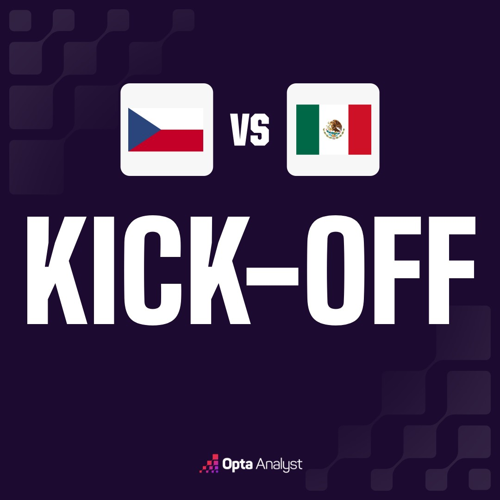
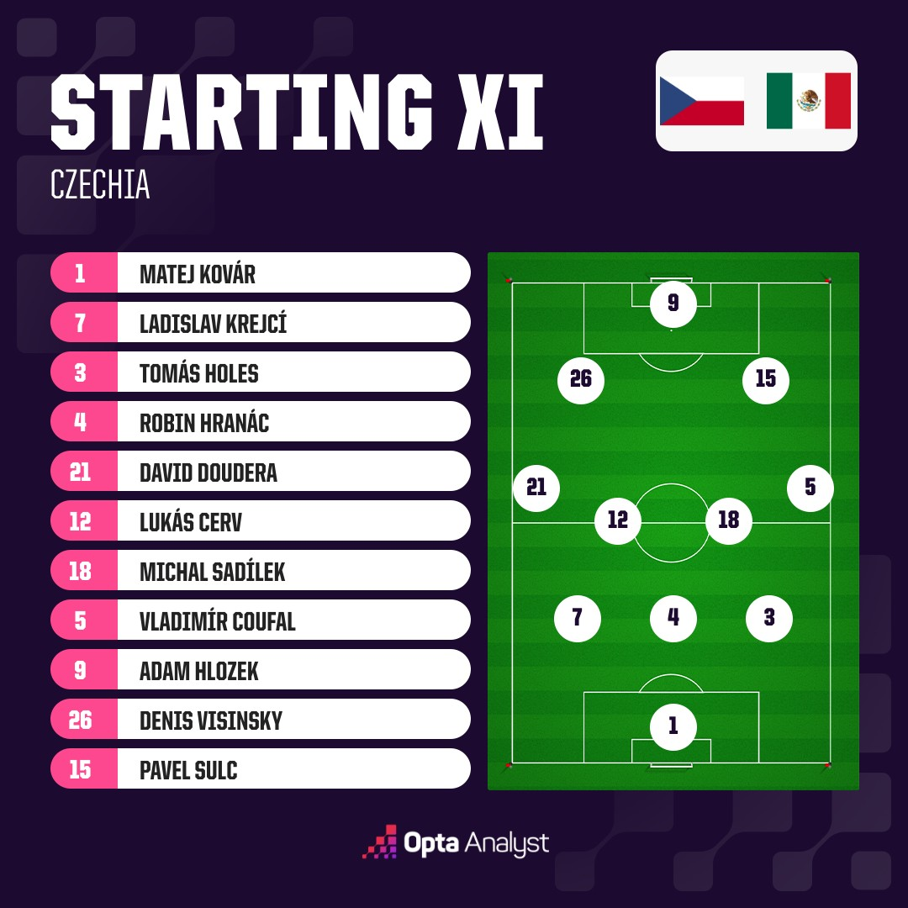
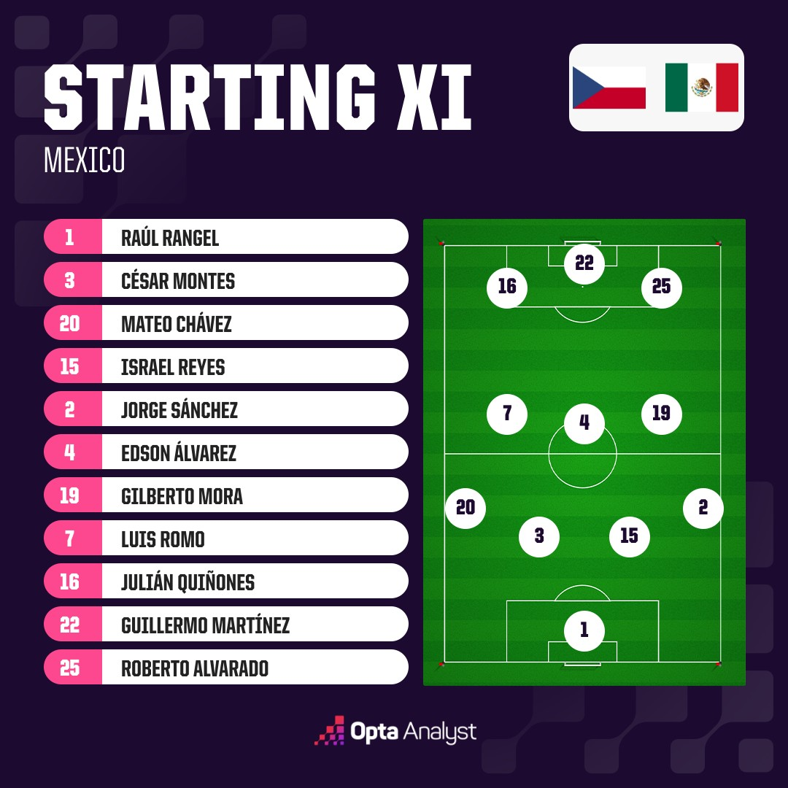
Czechia have drawn their last 3 home matches in a row
M. Sadílek has scored in the last 2 home games for Czechia
Czechia play Mexico for a FIFA World Cup group stage match at Mexico City Stadium on Wednesday with the Mexican side having already secured a place in the Round of 32.
Czechia earned a point for the first time in the competition this season in their last group stage match, drawing 1-1 against South Africa on June 18. Michal Sadílek was the only player to net in the draw. In six games this year, they have four wins, one draw, and one loss.
Mexico's last group stage game saw them triumph 1-0 over Korea Republic on June 18 at Estadio Guadalajara, extending their unbeaten streak to 10. Luis Romo scored in the win.
Mexico are top of the group on six points. Czechia's one point places them third, currently out of the knockout round places but still on for a place in the round of 32.
Korea Republic are second in the group on three points, well-positioned to advance to the Round of 32. South Africa are facing elimination, sitting fourth on one point.
The previous encounter between the sides saw Czechia emerge victorious 2-1 in February 2000.
Two players who have caught the eye for Czechia in World Cup play are Ladislav Krejcí and Sadílek. The duo are the team's joint top scorers with one goal. Krejcí and Sadílek also share the same number of match-opening goals with one each. Mexico have been helped by Romo, Julián Quiñones, and Raúl Jiménez, who have each scored once in the current World Cup campaign.
Czechia have scored in nine straight matches in all competitions. They have scored in every match since a World Cup Qualifiers meeting with Croatia in October 2025.
In their last six matches in all competitions, Czechia have won two, drawn three and lost one. The Czechia side scored 11 and conceded nine over that stretch, scoring first in five of the six contests. A majority of their goals (six) came in the first half, while their opponents netted three times in the first 45 minutes. Mexico have won five and drawn one in their last six. The Mexican side scored 12 and conceded two in that stretch, netting first in five of the six. They had six goals in the first half, while their opponents netted one time before the break.
-
General
Possession 51.9% 51.8748.1348.1% Possession lost in defensive half 25 252424 Possession lost in middle third 47 474242 Duels 78 787777 Duels success rate 53.8% 53.84644.15644.2% Aerial duels 22 222222 Aerial duels won 59.1% 59.09140.90940.9% Successful dribbles 5 544 Fouls won 13 1399 Offsides 1 100 Corner awarded 5 511 -
Distribution
Passes 398 398386386 Long passes 53 535555 Long passes proportion (%) 13.3% 13.31714.24914.2% Passing accuracy 83.7% 83.66885.49285.5% Passes in opponents' half 163 163197197 Passing accuracy in opponents' half (%) 71.2% 71.16676.6576.6% Total passes in the final third 74 74111111 Passing accuracy in final third (%) 60.8% 60.81175.67675.7% Forward passes 238 238245245 Forward passes (%) 59.8% 59.79963.47263.5% Through balls 0 011 Final third entries 43 434747 Penalty area entries 29 292828 Total open play crosses 18 1899 Crosses 26 261212 Crossing accuracy 19.2% 19.2318.3338.3% -
Attack
Goals 0 033 Shots 13 131111 Shots on target 1 155 Blocked shots 4 422 Headed shots 1 111 Shots outside the box 7 722 Shots inside the box 6 699 Shots accuracy excluding blocked shots 11.1% 11.11155.55655.6% Shooting accuracy 7.7% 7.69245.45545.5% Key Passes 5 51010 -
Defence
Tackles 12 121212 Tackles success rate 58.3% 58.33366.66766.7% Clearances 20 203030 Interceptions 5 577 Recoveries 40 403838 Attacking third recovery 2 244 Defensive third recovery 21 212323 Midfield third recovery 17 171111 Recoveries in attacking half (%) 5.0% 510.52610.5% -
Discipline
Fouls conceded 9 91313 Yellow cards 0 011 Red cards 0 000